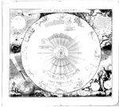

Systema solare et planetarium ex hypothesi Copernicana secundum elegantissimas illustrissimi quondam Hugenii deductiones novissime collectum et exhibitum a Iohanne Bapt. Homanno. Kopergravure, gekleurd, 490 x 570 mm. Noribergae, [1706 of 1707.] -- (COLLBN Port 169 N 43)
Deze kaart van zon en planeten, door Johann Baptista Homann (1663-1724) te Neurenberg uitgegeven, werd vooral geïnspireerd door de beschrijving die Christiaan Huygens (1629-1695) daarvan in zijn Kosmotheoros heeft gegeven. Daarin vinden we een voorstelling van de zon met de planeten volgens de nieuwe Newtoniaanse opvatting, waarbij de baan van iedere planeet een ellips beschrijft en de zon zich, excentrisch, in een van de brandpunten van die ellips bevindt.
De zonsverduistering van 12 mei 1706, die in grote delen van Europa en Azië te zien was, vormde naar alle waarschijnlijkheid de aanleiding voor deze uitgave. Homann, die in 1702 voor zichzelf met het uitgeven van kaarten was begonnen, deed in 1707 zijn eerste atlas het licht zien en daarin was dit Systema solare al opgenomen. Deze vroege datering zou dan ook kunnen betekenen dat hijzelf -- zoals de titel zegt -- de ontwerper/redacteur is geweest en niet de astronoom Johann Gabriel Doppelmayer, voor wie hij later een hele serie astronomische kaarten laat graveren en uitgeeft. De zonne-eclips is links onder afgebeeld, zoals ze te zien was in Neurenberg. Bedrijvige putti hanteren talrijke instrumenten, waaronder de enorme telescoop opvalt.
Rechts onder zien we drie bekende systemen naast elkaar afgebeeld: dat van Ptolemaeus, verouderd en in een vervallen toestand, bovendien door moderne instrumenten deels aan het oog onttrokken; daarop volgt dat van Tycho Brahe en ten slotte verwijst Vrouwe Astronomia naar het stelsel van Copernicus. Beide laatste zijn voorzien van onderschriften, die op treffende wijze de twee polen aangeven waartussen de natuurwetenschap zich in die tijd bevond, namelijk de waarneming: ‘Sic oculis’ (zo met de ogen) en: ‘Sic ratione’ (zo met de rede).
Het centraal geplaatste motto ‘Ex his Creatorem’ (Hieruit [kennen wij] de Schepper) brengt ons bij de hoofdgedachte die ten grondslag ligt aan de Kosmotheoros, het populairste werk van Huygens uit die tijd: de bewondering voor de grootheid van de schepping en de Schepper. Zijn daarin geuite, vaak speculatieve beweringen over kosmologische zaken krijgen op de getoonde kaart rechts boven de aandacht in de toelichting bij de schets van de in wolkenmassa’s gehulde andere zonnestelsels. Hij refereert daar met name aan de in de Kosmotheoros gegeven berekening van de afstand van de aarde tot de vaste ster Sinus, waardoor de bestaande ideeën over de afmetingen van het heelal, en dus niet van ons zonnestelsel alleen, zich zo drastisch wijzigden, dat de aarde nog maar een te verwaarlozen stipje blijkt te zijn: de kaart spreekt van een ‘rationem puncti’. De in de Kosmotheoros opgenomen illustratie van de grootte van de planeten vergeleken met die van de zon heeft links boven in Homanns kaart ook een plaatsje gekregen.
In de hoofdkaart zelf, gevat binnen de ingekleurde dierenriem, wordt de Nederlandse Archimedes met name genoemd als ontdekker in 1655 van de vierde maan van Saturnus. Aan de in de Kosmotheoros verwoorde speculaties over leven op andere planeten worden we herinnerd door de bijschriften bij Jupiter en Saturnus. Deze fraaie compilatie van astronomische illustraties geeft zo de stand van de wetenschap aan het begin van de achttiende eeuw weer.
Literatuur
- C. Sandler, ‘Johann Baptist Homann. Ein Beitrag zur Geschichte der Kartographie’, in: Zeitschrift der Gesellschaft für Erdkunde, 21 (1886), p. 328-384. Herdrukt in: C. Sandler, Johann Baptist Homann, Matthäus Seutter und ihre Landkarten. Ein Beitrag zur Geschichte der Kartographie. Amsterdam 1963.
- J. en A. Romein, Erflaters van onze beschaving. Nederlandse gestalten uit zes eeuwen. Amsterdam [etc.] 1959, p. 395-422.
- Christiaan Huygens, 1629-1695. Een quaestie van tijd. Leiden 1979 ( = Mededeling van het Museum Boerhaave. Nr. 197).
- R. Hooykaas, Experientia ac ratione. Huygens tussen Descartes en Newton. Voordracht [...]. Leiden 1979.
| vorige pagina | top pagina |